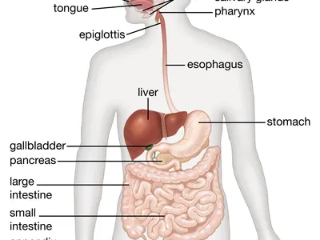

Digestive System
The digestive system is the organ system that breaks down food into nutrients such as carbohydrates, fats, and proteins.
Digestion involves the breakdown of food into smaller and smaller components, until they can be absorbed and assimilated
into the body.They can then be absorbed into the bloodstream so the body can use them for energy, growth and repair.
Parts of the digestive system
- Mouth- The part where crushing and grinding of food happens.
- Esophagus- The food pipe which carries food from the mouth to the stomach.
- Stomach- The internal organ in which the major part of the digestion of food occurs.
- Small Intestine- It helps to further digest the food and it also absorbs nutrients from the food.
- Large Intestine- It helps in absorption of water from the indigestible residue of food.
- Anus- It is the opening at the far end of the digestive tract through which stool leaves the body.
The anus is formed partly from the surface layers of the body, including the skin.
- liver- It's main job within the digestive system is to process the nutrients absorbed from the small intestine.
Bile from the liver secreted into the small intestine also plays an important role in digesting fat and some vitamins.
- Pancreas- The pancreas secretes digestive enzymes that break down protein, fats and carbohydrates.
The pancreas also makes insulin, passing it directly into the bloodstream.
Insulin is the chief hormone in your body for metabolizing sugar.
Facts about the Digestive System
- An average human produces 23000 litres of saliva or spit in a lifetime. That's enough saliva to fill 2 swimming pools!
- The digestive system can be up to 30 feet in length in adults.
- The second part of your small intestine is called the jejunum.
- Enzymes in your digestive system are what separate food into the different nutrients that your body needs.
- The digestive juices in your stomach contain acids which are so powerful they can burn through your skin!
